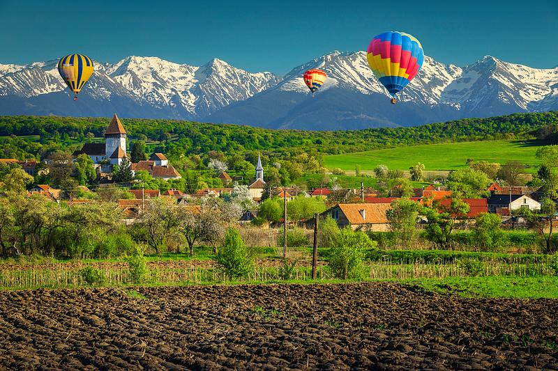

9.5

550 EURO / person
Romania (/roʊˈmeɪniə/ (listen) roh-MAY-nee-ə; Romanian: România [romɨˈni.a] (listen)) is a country located at the crossroads of Central, Eastern, and Southeastern Europe. It borders Bulgaria to the south, Ukraine to the north, Hungary to the west, Serbia to the southwest, Moldova to the east, and the Black Sea to the southeast. It has a predominantly temperate-continental climate, and an area of 238,397 km2 (92,046 sq mi), with a population of under 18.9 million inhabitants (2023). Romania is the twelfth-largest country in Europe and the sixth-most populous member state of the European Union. Its capital and largest city is Bucharest, followed by Iași, Cluj-Napoca, Timișoara, Constanța, Craiova, Brașov, and Galați. Europe's second-longest river, the Danube, rises in Germany's Black Forest and flows southeasterly for 2,857 km (1,775 mi), before emptying into Romania's Danube Delta. The Carpathian Mountains cross Romania from the north to the southwest and include Moldoveanu Peak, at an altitude of 2,544 m (8,346 ft).[11]

Settlement in what is now Romania began in the Lower Paleolithic followed by written records attesting the kingdom of Dacia, its conquest, and subsequent Romanization by the Roman Empire during late antiquity. The modern Romanian state was formed in 1859 through a personal union of the Danubian Principalities of Moldavia and Wallachia. The new state, officially named Romania since 1866, gained independence from the Ottoman Empire in 1877. During World War I, after declaring its neutrality in 1914, Romania fought together with the Allied Powers from 1916. In the aftermath of the war, Bukovina, Bessarabia, Transylvania, and parts of Banat, Crișana, and Maramureș became part of the Kingdom of Romania.[12] In June–August 1940, as a consequence of the Molotov–Ribbentrop Pact and Second Vienna Award, Romania was compelled to cede Bessarabia and Northern Bukovina to the Soviet Union and Northern Transylvania to Hungary. In November 1940, Romania signed the Tripartite Pact and, consequently, in June 1941 entered World War II on the Axis side, fighting against the Soviet Union until August 1944, when it joined the Allies and recovered Northern Transylvania. Following the war and occupation by the Red Army, Romania became a socialist republic and a member of the Warsaw Pact. After the 1989 Revolution, Romania began a transition towards democracy and a market economy.